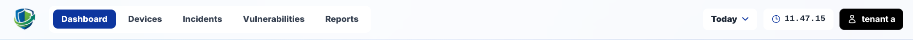
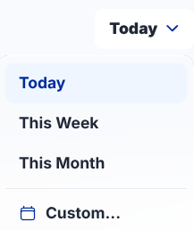
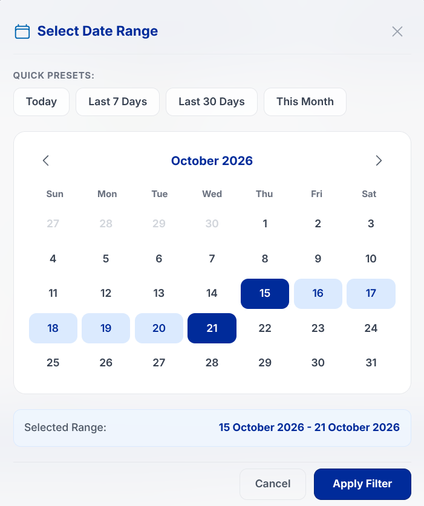
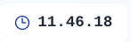
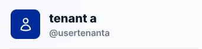
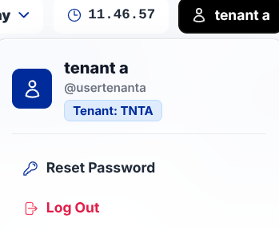
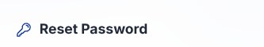
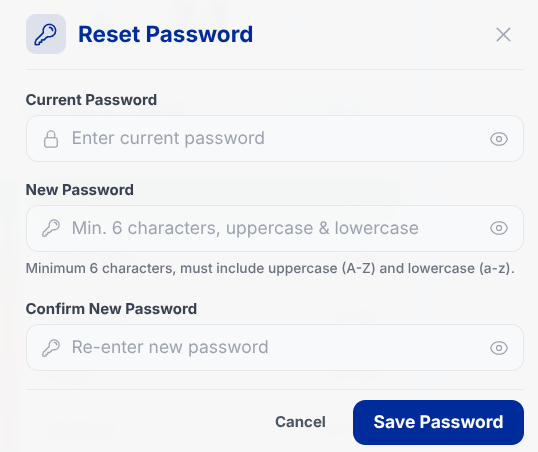

Header
The header component resides at the top of the ASOC Client Dashboard interface, functioning as the primary navigation bar and offering immediate access to global observation intervals, profile credentials, and security controls.

3.1. Time Range Filter
The time range filter enables analysts to configure the specific temporal observation window used to populate security telemetry across all dashboard cards and tables.


- Today: Restricts incident logs to events detected within the rolling 24 hours of the active calendar day.
- This Week: Filters data commencing from Monday of the current active calendar week through the present moment.
- This Month: Restricts data from the 1st day of the active calendar month through the present date.
- Custom: Opens an interactive calendar modal to select exact Start Date and End Date boundaries. Features quick shortcut presets (Today, Last 7 Days, Last 14 Days, Last 30 Days, and This Month).
3.2. Real-Time Operational Clock
Displays a real-time synchronized clock in the header bar in 24-hour format, assisting security teams with accurate forensic event timekeeping during active triage.

3.3. Account Profile
Shows active profile identity attributes, displaying the registered institution or university name alongside the active authenticated account handle (@username). Clicking the profile element opens the dropdown menu containing:
- Guide: Opens this interactive user guideline documentation in a new browser tab.
- Reset Password: Opens the modal dialog to securely update your account password.
- Log Out: Terminates the active session and redirects to the login screen.


3.4. Password Reset Menu
Enables users to update account passwords upon receiving newly provisioned credentials or periodically to preserve account hygiene.


Step-by-Step Instructions:
-
Open Profile Dropdown
Click your profile avatar located at the top-right corner of the header bar.
-
Select Reset Password
Click on the Reset Password option from the dropdown menu.
-
Complete Credential Form
Enter your Current Password, followed by your New Password and Confirm New Password.
-
Save Changes
Click the Simpan Password (Save Password) button to commit the update.
Password Policy & Validation Rules:
- Minimum Length: Must consist of at least 6 characters.
- Required Character Combination: Must combine both uppercase letters (A-Z) and lowercase letters (a-z).
- Identity Constraint: The new password cannot match the existing password, and confirmation must match identically.
3.5. Logout Button
Safely terminates the active user session, clears authentication cookies, revokes the security session token, and returns the browser to the login screen.